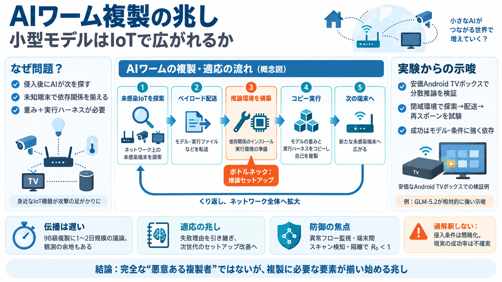

New AI Models Released in August 2026: The Full List
: Twelve distinct models: Qwen3.8-Max from Alibaba on August 3, Muse Spark 1.2 from Meta on August 5, Muse Glimmer fro…

: Twelve distinct models: Qwen3.8-Max from Alibaba on August 3, Muse Spark 1.2 from Meta on August 5, Muse Glimmer fro…
Contact usClient portal login ThreatLocker Zero Trust Platform logo Request a demo BACK TO BLOGS Back to Press Rele…
With GLM-5.2, Z.ai is focused on moving AI development from shorter coding assistance toward longer, more autonomous eng…
### August 2026 Baseten joins Hugging Face Inference Providers AI infrastructure platform Baseten is now a suppor…
Benchmarks, Evaluations, and Long-Horizon Agent Measurement [...] Inference, Retrieval, and Systems Efficiency [...] + A…